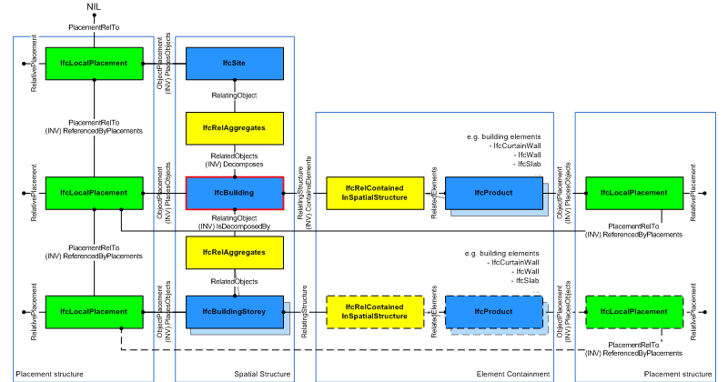
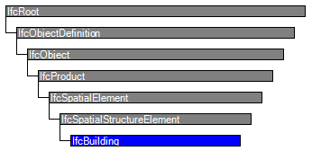

| Gebäude |
 | Building |
 | Bâtiment |
| Item | SPF | XML | Change | Description | 4.0.0.0 |
|---|---|---|---|---|
| IfcBuilding | ||||
| OwnerHistory | MODIFIED | Instantiation changed to OPTIONAL. | ||
| CompositionType | MODIFIED | Instantiation changed to OPTIONAL. |
A building represents a structure that provides shelter for its occupants or contents and stands in one place. The building is also used to provide a basic element within the spatial structure hierarchy for the components of a building project (together with site, storey, and space).
NOTE Definition from ISO 6707-1:
Construction work that has the provision of shelter for its occupants or contents as one of its main purpose and is normally designed to stand permanently in one place.
A building is (if specified) associated to a site. A building may span over several connected or disconnected buildings. Therefore building complex provides for a collection of buildings included in a site. A building can also be decomposed in (vertical) parts, where each part defines a building section. This is defined by the composition type attribute of the supertype IfcSpatialStructureElements which is interpreted as follow:
The IfcBuilding is used to build the spatial structure of a building (that serves as the primary project breakdown and is required to be hierarchical). The spatial structure elements are linked together by using the objectified relationship IfcRelAggregates. Figure 108 shows the IfcBuilding as part of the spatial structure. It also serves as the spatial container for building and other elements.
NOTE Detailed requirements on mandatory element containment and placement structure relationships are given in view definitions and implementer agreements.
|  |
|
Figure 108 — Building composition |
Systems, such as building service or electrical distribution systems, zonal systems, or structural analysis systems, relate to IfcBuilding by using the objectified relationship IfcRelServicesBuildings.
Figure 109 describes the heights and elevations of the IfcBuilding. It is used to provide the height above sea level of the project height datum for this building, that is, the internal height 0.00. The height 0.00 is often used as a building internal reference height and equal to the floor finish level of the ground floor.

|
|
Figure 109 — Building elevations |
HISTORY New entity in IFC1.0.
| # | Attribute | Type | Cardinality | Description | R |
|---|---|---|---|---|---|
| 10 | ElevationOfRefHeight | IfcLengthMeasure | ? | Elevation above sea level of the reference height used for all storey elevation measures, equals to height 0.0. It is usually the ground floor level. | X |
| 11 | ElevationOfTerrain | IfcLengthMeasure | ? | Elevation above the minimal terrain level around the foot print of the building, given in elevation above sea level. | X |
| 12 | BuildingAddress | IfcPostalAddress | ? | Address given to the building for postal purposes. | X |

| # | Attribute | Type | Cardinality | Description | R |
|---|---|---|---|---|---|
| IfcRoot | |||||
| 1 | GlobalId | IfcGloballyUniqueId | Assignment of a globally unique identifier within the entire software world. | X | |
| 2 | OwnerHistory | IfcOwnerHistory | ? |
Assignment of the information about the current ownership of that object, including owning actor, application, local identification and information captured about the recent changes of the object,
NOTE only the last modification in stored - either as addition, deletion or modification. IFC4 CHANGE The attribute has been changed to be OPTIONAL. | X |
| 3 | Name | IfcLabel | ? | Optional name for use by the participating software systems or users. For some subtypes of IfcRoot the insertion of the Name attribute may be required. This would be enforced by a where rule. | X |
| 4 | Description | IfcText | ? | Optional description, provided for exchanging informative comments. | X |
| IfcObjectDefinition | |||||
| HasAssignments | IfcRelAssigns @RelatedObjects | S[0:?] | Reference to the relationship objects, that assign (by an association relationship) other subtypes of IfcObject to this object instance. Examples are the association to products, processes, controls, resources or groups. | X | |
| Nests | IfcRelNests @RelatedObjects | S[0:1] | References to the decomposition relationship being a nesting. It determines that this object definition is a part within an ordered whole/part decomposition relationship. An object occurrence or type can only be part of a single decomposition (to allow hierarchical strutures only).
IFC4 CHANGE The inverse attribute datatype has been added and separated from Decomposes defined at IfcObjectDefinition. | ||
| IsNestedBy | IfcRelNests @RelatingObject | S[0:?] | References to the decomposition relationship being a nesting. It determines that this object definition is the whole within an ordered whole/part decomposition relationship. An object or object type can be nested by several other objects (occurrences or types).
IFC4 CHANGE The inverse attribute datatype has been added and separated from IsDecomposedBy defined at IfcObjectDefinition. | X | |
| HasContext | IfcRelDeclares @RelatedDefinitions | S[0:1] | References to the context providing context information such as project unit or representation context. It should only be asserted for the uppermost non-spatial object.
IFC4 CHANGE The inverse attribute datatype has been added. | ||
| IsDecomposedBy | IfcRelAggregates @RelatingObject | S[0:?] | References to the decomposition relationship being an aggregation. It determines that this object definition is whole within an unordered whole/part decomposition relationship. An object definitions can be aggregated by several other objects (occurrences or parts).
IFC4 CHANGE The inverse attribute datatype has been changed from the supertype IfcRelDecomposes to subtype IfcRelAggregates. | X | |
| Decomposes | IfcRelAggregates @RelatedObjects | S[0:1] | References to the decomposition relationship being an aggregation. It determines that this object definition is a part within an unordered whole/part decomposition relationship. An object definitions can only be part of a single decomposition (to allow hierarchical strutures only).
IFC4 CHANGE The inverse attribute datatype has been changed from the supertype IfcRelDecomposes to subtype IfcRelAggregates. | X | |
| HasAssociations | IfcRelAssociates @RelatedObjects | S[0:?] | Reference to the relationship objects, that associates external references or other resource definitions to the object.. Examples are the association to library, documentation or classification. | X | |
| IfcObject | |||||
| 5 | ObjectType | IfcLabel | ? |
The type denotes a particular type that indicates the object further. The use has to be established at the level of instantiable subtypes. In particular it holds the user defined type, if the enumeration of the attribute PredefinedType is set to USERDEFINED.
| X |
| IsTypedBy | IfcRelDefinesByType @RelatedObjects | S[0:1] | Set of relationships to the object type that provides the type definitions for this object occurrence. The then associated IfcTypeObject, or its subtypes, contains the specific information (or type, or style), that is common to all instances of IfcObject, or its subtypes, referring to the same type.
IFC4 CHANGE New inverse relationship, the link to IfcRelDefinesByType had previously be included in the inverse relationship IfcRelDefines. Change made with upward compatibility for file based exchange. | X | |
| IsDefinedBy | IfcRelDefinesByProperties @RelatedObjects | S[0:?] | Set of relationships to property set definitions attached to this object. Those statically or dynamically defined properties contain alphanumeric information content that further defines the object.
IFC4 CHANGE The data type has been changed from IfcRelDefines to IfcRelDefinesByProperties with upward compatibility for file based exchange. | X | |
| IfcProduct | |||||
| 6 | ObjectPlacement | IfcObjectPlacement | ? | Placement of the product in space, the placement can either be absolute (relative to the world coordinate system), relative (relative to the object placement of another product), or constraint (e.g. relative to grid axes). It is determined by the various subtypes of IfcObjectPlacement, which includes the axis placement information to determine the transformation for the object coordinate system. | X |
| 7 | Representation | IfcProductRepresentation | ? | Reference to the representations of the product, being either a representation (IfcProductRepresentation) or as a special case a shape representations (IfcProductDefinitionShape). The product definition shape provides for multiple geometric representations of the shape property of the object within the same object coordinate system, defined by the object placement. | X |
| IfcSpatialElement | |||||
| 8 | LongName | IfcLabel | ? |
Long name for a spatial structure element, used for informal purposes. It should be used, if available, in conjunction with the inherited Name attribute.
NOTE In many scenarios the Name attribute refers to the short name or number of a spacial element, and the LongName refers to the full descriptive name. | X |
| ContainsElements | IfcRelContainedInSpatialStructure @RelatingStructure | S[0:?] | Set of spatial containment relationships, that holds those elements, which are contained within this element of the project spatial structure.
NOTE The spatial containment relationship, established by IfcRelContainedInSpatialStructure, is required to be an hierarchical relationship, where each element can only be assigned to 0 or 1 spatial structure element. | X | |
| ServicedBySystems | IfcRelServicesBuildings @RelatedBuildings | S[0:?] | Set of relationships to systems, that provides a certain service to the spatial element for which it is defined. The relationship is handled by the objectified relationship IfcRelServicesBuildings.
IFC4 CHANGE The inverse attribute has been promoted to the new supertype IfcSpatialElement with upward compatibility for file based exchange. | X | |
| IfcSpatialStructureElement | |||||
| 9 | CompositionType | IfcElementCompositionEnum | ? |
Denotes, whether the predefined spatial structure element represents itself, or an aggregate (complex) or a part (part). The interpretation is given separately for each subtype of spatial structure element. If no CompositionType is asserted, the dafault value 'ELEMENT' applies.
IFC4 CHANGE Attribute made optional. | X |
| IfcBuilding | |||||
| 10 | ElevationOfRefHeight | IfcLengthMeasure | ? | Elevation above sea level of the reference height used for all storey elevation measures, equals to height 0.0. It is usually the ground floor level. | X |
| 11 | ElevationOfTerrain | IfcLengthMeasure | ? | Elevation above the minimal terrain level around the foot print of the building, given in elevation above sea level. | X |
| 12 | BuildingAddress | IfcPostalAddress | ? | Address given to the building for postal purposes. | X |
Building Identity
The Building Attributes concept applies to this entity.
The usage of building address, elevation measures and composition type is governed by this concept.
Spatial Composition
The Spatial Composition concept template applies to this entity as shown in Table 4.
| ||||
Table 4 — IfcBuilding Spatial Composition |
NOTE By using the inverse relationship IfcBuilding.Decomposes it references IfcProject || IfcSite || IfcBuilding through IfcRelAggregates.RelatingObject. If it refers to another instance of IfcBuilding, the referenced IfcBuilding needs to have a different and higher CompositionType, i.e. COMPLEX (if the other IfcBuilding has ELEMENT), or ELEMENT (if the other IfcBuilding has PARTIAL).
Spatial Decomposition
The Spatial Decomposition concept template applies to this entity as shown in Table 5.
| ||||
Table 5 — IfcBuilding Spatial Decomposition |
NOTE By using the inverse relationship IfcBuilding.IsDecomposedBy it references IfcBuilding || IfcBuildingStorey through IfcRelAggregates.RelatedObjects. If it refers to another instance of IfcBuilding, the referenced IfcBuilding needs to have a different and lower CompositionType, i.e. ELEMENT (if the other IfcBuilding has COMPLEX), or PARTIAL (if the other IfcBuilding has ELEMENT).
Spatial Container
The Spatial Container concept template applies to this entity as shown in Table 6.
| ||||
Table 6 — IfcBuilding Spatial Container |
NOTE If there are building elements and/or other elements directly related to the IfcBuilding (like a curtain wall spanning several stories), they are associated with the IfcBuilding by using the objectified relationship IfcRelContainedInSpatialStructure. The IfcBuilding references them by its inverse relationship IfcBuilding.ContainsElements, referencing any subtype of IfcProduct (with the exception of other spatial structure element) by IfcRelContainedInSpatialStructure.RelatedElements.
Property Sets for Objects
The Property Sets for Objects concept template applies to this entity as shown in Table 7.
The following standard property sets are defined for IfcBuilding.
Quantity Sets
The Quantity Sets concept template applies to this entity as shown in Table 8.
| ||||||||||||||||||||||||||||||||||||||||||||||
Table 8 — IfcBuilding Quantity Sets |
The following base quantities are defined for IfcBuilding.
Product Local Placement
The Product Local Placement concept template applies to this entity as shown in Table 9.
| ||||||
Table 9 — IfcBuilding Product Local Placement |
The local placement for IfcBuilding is defined by its supertype IfcProduct. It is defined by the IfcLocalPlacement, which establishes the local coordinate system that is referenced by all geometric representations.
FootPrint GeomSet Geometry
The FootPrint GeomSet Geometry concept applies to this entity.
Structure Service Connectivity
The Spatial Service Connectivity concept applies to this entity.
Object Typing
The Object Typing concept (defined at a supertype) does NOT apply to this entity.
Object Predefined Type
The Object Predefined Type concept (defined at a supertype) does NOT apply to this entity.
Object User Identity
The Object User Identity concept (defined at a supertype) does NOT apply to this entity.
<?xml version="1.0"?>
<ConceptRoot xmlns:xsi="http://www.w3.org/2001/XMLSchema-instance" xmlns:xsd="http://www.w3.org/2001/XMLSchema" uuid="107a1911-8387-4ae1-9d4b-2d8030e6b85d" name="IfcBuilding" status="sample" applicableRootEntity="IfcBuilding">
<Applicability uuid="00000000-0000-0000-0000-000000000000" status="sample">
<Template ref="b3eb98ea-871c-4be5-8280-224af86f9db7" />
<TemplateRules operator="and" />
</Applicability>
<Concepts>
<Concept uuid="463257ee-325e-4306-9791-b883b0b8ec4d" name="Building Identity" status="sample" override="false">
<Template ref="40100f0d-dd58-47f3-899a-b6a5a6b4f572" />
<Requirements>
<Requirement applicability="import" requirement="recommended" exchangeRequirement="dcd96125-898e-4ff0-b294-eb02afe953aa" />
<Requirement applicability="export" requirement="recommended" exchangeRequirement="dcd96125-898e-4ff0-b294-eb02afe953aa" />
</Requirements>
</Concept>
<Concept uuid="3dc5b493-557d-482d-8191-406e5e9cf962" name="Spatial Composition" status="sample" override="false">
<Template ref="8c0fd2f7-71bb-4e6e-8fdb-0c02b352f14a" />
<TemplateRules operator="and">
<TemplateRule Description="Direct assignment to project, if the building is the outermost spatial container, and no site information is provided for building projects" Parameters="Spatial Composite=IfcProject;" />
<TemplateRule Description="Assignment to site, if the building is the spatial container for the building project with site information " Parameters="Spatial Composite=IfcSite;" />
<TemplateRule Description="Assignment to another building as spatial container, e.g. if this building represents a building section." Parameters="Spatial Composite=IfcBuilding;" />
</TemplateRules>
</Concept>
<Concept uuid="b286cb21-4118-4a4f-895b-cb6456ed623c" name="Spatial Decomposition" status="sample" override="false">
<Template ref="667f8443-ecce-4a8d-a63f-931fab0453e0" />
<Requirements>
<Requirement applicability="export" requirement="recommended" exchangeRequirement="dcd96125-898e-4ff0-b294-eb02afe953aa" />
<Requirement applicability="import" requirement="recommended" exchangeRequirement="dcd96125-898e-4ff0-b294-eb02afe953aa" />
</Requirements>
<TemplateRules operator="and">
<TemplateRule Description="Spatial decomposition into building stories." Parameters="Spatial Parts=IfcBuildingStorey;" />
<TemplateRule Description="Spatial decomposition into other buildings, e.g. if this building represents a complex building that is subdivided into building sections. " Parameters="Spatial Parts=IfcBuilding;" />
</TemplateRules>
</Concept>
<Concept uuid="d3d451c3-e8ee-42de-91c3-2a3ceb789d24" name="Spatial Container" status="sample" override="false">
<Template ref="61dd08ed-fd01-4955-9337-8afd284a0e6f" />
<Requirements>
<Requirement applicability="export" requirement="recommended" exchangeRequirement="dcd96125-898e-4ff0-b294-eb02afe953aa" />
<Requirement applicability="import" requirement="recommended" exchangeRequirement="dcd96125-898e-4ff0-b294-eb02afe953aa" />
</Requirements>
<TemplateRules operator="and">
<TemplateRule Description="The building may contain elements directly (if those are not assigned to the individual building stories or spaces." Parameters="Type=IfcElement;" />
</TemplateRules>
</Concept>
<Concept uuid="a8d8b5f8-9088-4534-8a5a-179242f7706b" name="Property Sets for Objects" status="sample" override="false">
<Template ref="f74255a6-0c0e-4f31-84ad-24981db62461" />
<TemplateRules operator="and">
<TemplateRule Parameters="PsetName=Pset_BuildingCommon;" />
<TemplateRule Parameters="PsetName=Pset_BuildingUse;" />
<TemplateRule Parameters="PsetName=Pset_BuildingUseAdjacent;" />
<TemplateRule Parameters="PsetName=Pset_OutsideDesignCriteria;" />
</TemplateRules>
</Concept>
<Concept uuid="c1de5d9d-cc2c-44ec-a390-402581e3b7b2" name="Quantity Sets" status="sample" override="false">
<Template ref="6652398e-6579-4460-8cb4-26295acfacc7" />
<Requirements>
<Requirement applicability="export" requirement="recommended" exchangeRequirement="dcd96125-898e-4ff0-b294-eb02afe953aa" />
<Requirement applicability="import" requirement="recommended" exchangeRequirement="dcd96125-898e-4ff0-b294-eb02afe953aa" />
</Requirements>
<TemplateRules operator="and">
<TemplateRule Parameters="QsetName=Qto_BuildingBaseQuantities;" />
</TemplateRules>
</Concept>
<Concept uuid="958a6c8c-c17a-4c9a-9035-f6a9d1e4e7ab" name="Product Local Placement" status="sample" override="false">
<Template ref="cbe85b5f-7912-4a43-8bb7-1e63bf40b26d" />
<TemplateRules operator="and">
<TemplateRule Description="The <em>IfcBuilding</em> shall be placed relative to another <em>IfcBuilding</em> or an <em>IfcSite</em>." Parameters="HasPlacement=IfcLocalPlacement;" />
</TemplateRules>
</Concept>
<Concept uuid="0f6cd84b-a507-4ff4-b4f3-4d1bd1c19b0d" name="FootPrint GeomSet Geometry" status="sample" override="false">
<Template ref="9456d6d6-a62a-48b4-baff-be2e38baac9c" />
<Requirements>
<Requirement applicability="export" requirement="recommended" exchangeRequirement="dcd96125-898e-4ff0-b294-eb02afe953aa" />
<Requirement applicability="import" requirement="recommended" exchangeRequirement="dcd96125-898e-4ff0-b294-eb02afe953aa" />
</Requirements>
</Concept>
<Concept uuid="d08fc317-691e-4ca0-9af9-501223fa0123" name="Structure Service Connectivity" status="sample" override="false">
<Template ref="e3461692-f4c5-4dfa-a8f5-0734a0698f6b" />
</Concept>
<Concept uuid="d7ab2ac7-add2-4bbd-85a1-917df69b13d7" name="Object Typing" status="sample" override="false">
<Template ref="35a2e10e-20df-40f4-ab2f-dacf0a6744f4" />
</Concept>
<Concept uuid="ac74e260-02f0-4ab2-b914-b10c1e40d2a0" name="Object Predefined Type" status="sample" override="false">
<Template ref="25248261-98df-4d0a-9364-5653575ca421" />
</Concept>
<Concept uuid="440a3888-d68d-43de-baee-5209bca0149c" name="Object User Identity" status="sample" override="false">
<Template ref="c19ec186-9cfd-47fc-a4d4-9fb35008d04a" />
</Concept>
</Concepts>
</ConceptRoot>
| # | Concept | Template | Model View |
|---|---|---|---|
| IfcRoot | |||
| Identity | Software Identity | Reference View | |
| Revision Control | Revision Control | Reference View | |
| IfcObjectDefinition | |||
| Classification | Classification | Reference View | |
| IfcObject | |||
| Object User Identity | Reference View | ||
| Object Predefined Type | Reference View | ||
| Object Typing | Reference View | ||
| Property Sets for Objects | Property Sets with Override | Reference View | |
| IfcSpatialElement | |||
| Spatial Element Type Predefined Type | Spatial Element Type Predefined Type | Reference View | |
| IfcBuilding | |||
| Building Identity | Building Attributes | Reference View | |
| Spatial Composition | Spatial Composition | Reference View | |
| Spatial Decomposition | Spatial Decomposition | Reference View | |
| Spatial Container | Spatial Container | Reference View | |
| Property Sets for Objects | Property Sets for Objects | Reference View | |
| Quantity Sets | Quantity Sets | Reference View | |
| Product Local Placement | Product Local Placement | Reference View | |
| FootPrint GeomSet Geometry | FootPrint GeomSet Geometry | Reference View | |
| Structure Service Connectivity | Spatial Service Connectivity | Reference View | |
<xs:element name="IfcBuilding" type="ifc:IfcBuilding" substitutionGroup="ifc:IfcSpatialStructureElement" nillable="true"/>
<xs:complexType name="IfcBuilding">
<xs:complexContent>
<xs:extension base="ifc:IfcSpatialStructureElement">
<xs:sequence>
<xs:element name="BuildingAddress" type="ifc:IfcPostalAddress" nillable="true" minOccurs="0"/>
</xs:sequence>
<xs:attribute name="ElevationOfRefHeight" type="ifc:IfcLengthMeasure" use="optional"/>
<xs:attribute name="ElevationOfTerrain" type="ifc:IfcLengthMeasure" use="optional"/>
</xs:extension>
</xs:complexContent>
</xs:complexType>
ENTITY IfcBuilding
SUBTYPE OF (IfcSpatialStructureElement);
ElevationOfRefHeight : OPTIONAL IfcLengthMeasure;
ElevationOfTerrain : OPTIONAL IfcLengthMeasure;
BuildingAddress : OPTIONAL IfcPostalAddress;
END_ENTITY;
 Instance diagram
Instance diagram Link to this page
Link to this page